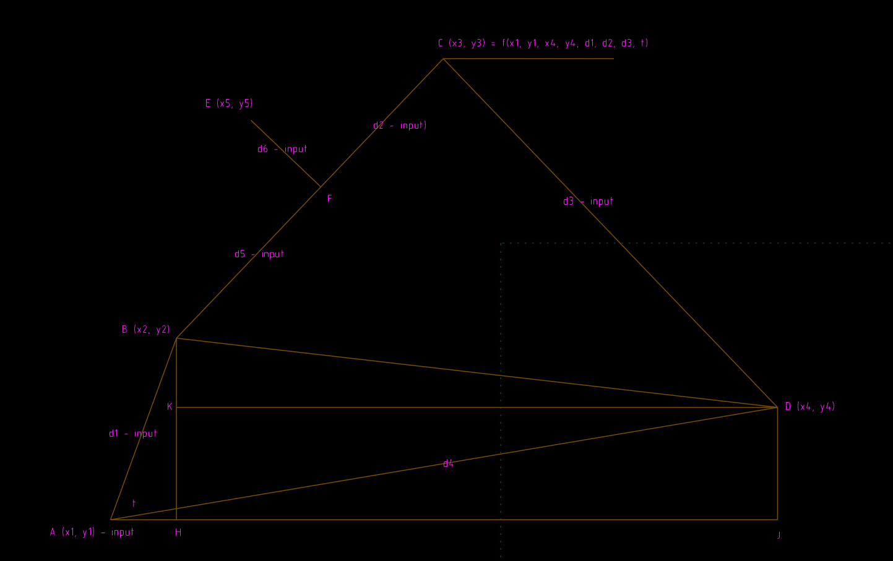

網際協同設計資料整合, 網際 2D 程式繪圖回顧
網際協同設計資料整合
利用 Github 倉儲中的組員間 git submodule 設定, 可以進行網際協同設計資料整合.
導入組員程式範例: https://scrum-1.github.io/2016fallcadp_ag100/blog/dao-ru-zu-yuan-cheng-shi-ce-shi.html
網際 2D 程式繪圖回顧
利用 HTML5 Canvas 與 Brython, 可以進行網際 2D 設計模擬繪圖:
https://developer.mozilla.org/en-US/docs/Web/API/Canvas_API/Tutorial/Transformations
https://www.codeproject.com/Articles/598955/CoordinateplussystemplusinplusHTML-plusCanvas-cpl
http://blog.carbonfive.com/2011/03/31/taming-2d-transforms/
http://blog.carbonfive.com/2011/02/17/visualizing-skillsets-in-html5-canvas-part-1/
利用網際 Python3 程式進行 2D 繪圖:
以上為 canvas1, 座標軸 x 向右為正, y 向下為正.
以上為 canvas2, 座標軸 x 向右為正, y 向下為正.
以上為 canvas3, 座標軸 x 向右為正, y 向上為正.
W1 實習任務
-
請自行分組每班分為八組, 各組協調後每一位組員均採固定座位就坐, 請各組設法列出各組員座位圖後, 以全班協同方式直接在各組網誌上呈現各組員學號與座位圖, 以 a 班為例, 各組倉儲名稱分別為 2017springcd_ag1~2017springcd_ag8, 各組的網誌中均必須設法呈現全班的電腦教室座位圖. (問題: 有沒有辦法在每週上課後第1堂下課之前, 在各組網誌上呈現當週各學員的出席情況與座次表?)
-
各組必須準備一個隨身硬碟儲存下載的可攜系統, 並且分別下載 tiny2017_50MB.7z, 以及 tiny2017_1GB.7z, 各組期中簡報時, 必須說明如何從最基本的 50MB 系統逐一納入各類工具得到 1GB 的最終可攜系統. (問題: 各組員會不會從無到有, 自行打造此一可攜程式系統?)
-
每四組將分配一台電腦當作區網協同伺服主機, 請各組分別指派一名組員負責, 向助教報到, 以便學習如何搭建區域網路上的 Fossil SCM 協同主機, 並負責為各組員建立及管理相關帳號. (問題: 各組有沒有能力自行維護區域網路上的協同產品設計主機?)
-
本學期課程將會使用 Github, Bitbucket, Vimeo, Youtube, Fossil SCM (由各組自行建立) 與 Onshape 等系統, 請各組員確定已經利用學號作為代號, 擁用各系統的擷取帳號. (問題: 如何呈現階段性的設計實習成果?)
-
請各組員確認已經會在 Solvespace 與 Onshape 中完成四連桿機構的組立, 並且輸出 stl 格式檔案後, 輸入 V-rep 中. (課程終極目標: 本課程將嘗試從電腦輔助機械設計進入運動模擬, 納入簡單的機電整合與傳動, 最後期望每班協同模擬並列印組立出兩台四足行走機構)
-
本學期每週上課結束前, 各組均必須直接在 Github Page 中以 Reveal.js 格式, 完成各週的協同實習簡報檔, 其中包含各學員與各組任務執行進度與自評.
請根據上述網際繪圖程式架構, 以 Brython 完成下列四連桿機構的示意繪圖:
其中旋轉軸點為 A 座標為 (x1, y1), 旋轉軸端點為 B 座標為 (x2, y2), 第2連桿端點為 C 座標為 (x3, y3), 第3軸的固定端點則為 D 座標為 (x4, y4).
另外, 以 A 點為起點的主動旋轉桿長為 d1, BC 連桿長為 d2, CD 桿長度為 d3, AD 桿長為 d4, BC 連桿上與旋轉路徑目標點 E 對應的點為 F, 與 B 點的距離為 d5, 與 E 點垂直距離為 d6, 主動旋轉軸的逆時鐘旋轉角度則為 t.
此一平面四連桿的輸入為 x1, y1, x4, y4, d1, d2, d3, d5, d6, 以及 t, 輸出則為 E 點的運動路徑.

利用 sympy 求解:
from sympy import *
'''
已知四連桿四個關鍵點座標分別為 A (x1, y1), B (x2, y2), C (x3, y3) 與 D (x4, y4)
且 E (x5, y5) 點相關參考x 座標距離為 d5, 而 y座標距離為 d6, 以及輸入角度逆時鐘轉 t 度
以 (x1, y1), (x4, y4), d1, d2, d3, d5, d6 及 t 等 10 個參數作為輸入,
求 E 點座標 (x5, y5)
假設 AB 連桿長度為 d1, BC 連桿長度為 d2, CD 連桿長度為 d3, AD 距離為 d4
'''
x1, x2, x3, x4, x5 = symbols('x1 x2 x3 x4 x5')
y1, y2, y3, y4, y5 = symbols('y1 y2 y3 y4 y5')
d1, d2, d3, d4, d5, d6, t, t3 = symbols('d1 d2 d3 d4 d5 d6 t t3')
ah, bh, aj, dj, bd, hj, dk, bk = symbols('ah bh aj dj bd hj dk bk')
# angle daj defined as daj
daj, adj, bad, bcd, bdc, bdk = symbols('daj adj bad bcd bdc bdk')
# degree factor
degree, pi = symbols('degree pi')
degree = pi/180.0
# 假設 B 點的絕對 y 座標方向投影點為 H
d1 = sqrt((x1-x2)**2+(y1-y2)**2)
#print(d1)
d2 = sqrt((x2-x3)**2+(y2-y3)**2)
d3 = sqrt((x3-x4)**2+(y3-y4)**2)
d4 = sqrt((x1-x4)**2+(y1-y4)**2)
ah = d1*cos(t)
bh = sqrt(d1**2 - ah**2)
aj = Abs(x4-x1)
dj = Abs(y4-y1)
dk = aj - ah
bk = bh - dj
t3 = bdc + bdk
# for daj, dj**2 = d4**2+aj**2 -2*d4*aj*cos(daj)
pos = 1
if pos == 1:
daj = solve(-dj**2+d4**2+aj**2 -2*d4*aj*cos(daj), daj)[0]
else:
daj = solve(-dj**2+d4**2+aj**2 -2*d4*aj*cos(daj), daj)[1]
#print(daj)
# for adj, aj**2=d4**2+dj**2-2*d4*aj*cos(adj)
if pos == 1:
adj = solve(-aj**2+d4**2+dj**2-2*d4*aj*cos(adj), adj)[0]
else:
adj = solve(-aj**2+d4**2+dj**2-2*d4*aj*cos(adj), adj)[0]
#print(adj)
bad = t*degree - daj
# according triangle tad find bd
#bd**2 = d1**2+d4**2-2*d1*d4*cos(bad)
if pos == 1:
bd = solve(-bd**2+d1**2+d4**2-2*d1*d4*cos(bad), bd)[0]
else:
bd = solve(-bd**2+d1**2+d4**2-2*d1*d4*cos(bad), bd)[1]
print(bd)
if pos == 1:
bcd = solve(-bd**2+d2**2+d3**2-2*d2*d3*cos(bcd), bcd)[0]
else:
bcd = solve(-bd**2+d2**2+d3**2-2*d2*d3*cos(bcd), bcd)[1]
if pos == 1:
bdk = solve(-bk**2+bd**2+dk**2-2*bd*dk*cos(bdk), bdk)[0]
else:
bdk = solve(-bk**2+bd**2+dk**2-2*bd*dk*cos(bdk), bdk)[1]
if pos == 1:
bdc = solve(-d2**2+d3**2+bd**2-2*d3*bd*cos(bdc), bdc)[0]
else:
bdc = solve(-d2**2+d3**2+bd**2-2*d3*bd*cos(bdc), bdc)[1]
print(t3)